FIELD20
エスタンシアの町
エンカウント率0%三日月島の首都。ランパル王が人が変わったようになり、逆らう者を次々と強制収容所へ送っているため、町は静まりかえっている。
名前 建物・場所→ ほかの FIELD へ1メインイベント1サブイベント
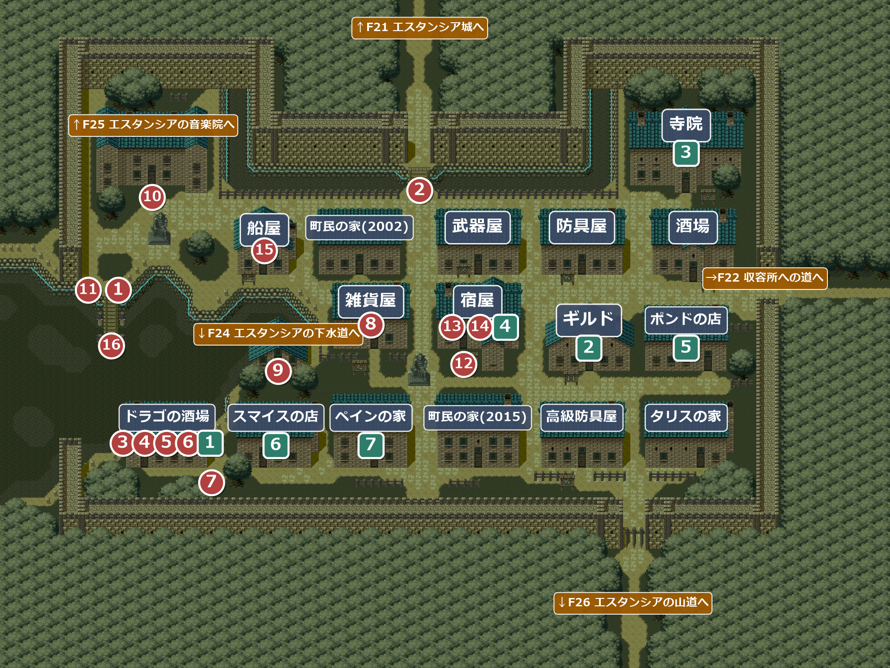
イベント
1
エスタンシアの町
場所: 桟橋の付け根(X28-30 Y79)
船で着くと、町は妙に静まりかえっている。アイリスは王宮へ行こうと言うが、場所が分からない。連れている仲間が一言かける。
| 連れている仲間 | セリフ |
|---|---|
| ドムカ | 「…知らん」 |
| スリム | 「どこなの？」 |
| ジョーイ | 「さあ、でも、たいてい島の奥にあるのよね！」 |
| エニクラウド | 「町というものは、城塞の人々の生活必需品を供給する場所として発展していったものですね」…「城というのは地の利のため、たいてい高台にあるわけです」 主人公「で、高台ってどこだ？」 エニクラウド「…歩いてみれば分かるのでは？」 主人公「結局、分からんてことか」 |
！町の西の男(X30 Y65)が地理を教えてくれる。北の門の先が王宮、東門の先が強制収容所。南門は、しばらく閉まっている。
次へ↑F21 エスタンシア城の王宮の入口へ。
F21 エスタンシア城から戻ってきたとき
2
見ていた男
場所: 城への橋の手前(X110-114 Y51)
王宮の入口で衛兵とやり合って戻ってくると、一部始終を見ていた男が「手助けが必要なら『ドラゴの店』においで」と言い残して、場所も告げずに去っていく。
！ドラゴの店(ドラゴの酒場)は町の南西のはずれ。町の反乱軍の男たちも場所を教えてくれる。
次へ町の南西、ドラゴの酒場へ(③)。
3
ドラゴの店
場所: ドラゴの酒場(部屋2003)の入口
城の前の立ち回りの噂は届いていて、店の男に奥の部屋へ案内される。
次へ自動で奥の部屋のロウへ(④)。
4
反乱軍の首領ロウ
場所: ドラゴの酒場の奥(部屋2006)
反乱軍の首領ロウから、ランパル王が贈られた骨の笛を神の山で吹いたことで音障壁が破られ、悪神ガリハアクが侵入して王を狂わせたと聞かされる。王宮に古い楽譜があるかもしれないが、侵入を手伝う条件は、強制収容所に捕まった同志ライオネルの救出に手を貸すこと。「やめる」を選んでもアイリスに説得されて同じ選択肢に戻され、断れない。
次へ→F22 収容所への道を通って強制収容所へ。
F23 強制収容所から戻ってきたとき
5
ロウとライオネルが待っている
場所: ドラゴの酒場(部屋2003)の入口
店の男に、ロウとライオネルの待つ奥の部屋へ案内される。
次へ自動で奥の部屋のライオネルへ(⑥)。
6
ライオネル
場所: ドラゴの酒場の奥(部屋2006)
王宮は魔法障壁で守られていて、入るには音楽院のフーコー院長が持つ震動石が要る。音楽院へは下水道から忍び込むしかなく、ライオネルが下水道の鍵を持っている。ライオネルを仲間にすると、下水道の入口は町の西だと教えてくれる。断っても、部屋のライオネルに話しかければいつでも仲間にできる(仲間にしないと下水道に入れない)。
加入ライオネル
！部屋に入ったほんの一瞬、ライオネルはカウンターのほうを向いて立っている。仲間にするのを断ると、またカウンターに戻っていく。よほど酒が飲みたいらしい…
次へ酒場を出て、町の西の下水道へ(⑦)。
7
下水道の入口
場所: ドラゴの酒場の東の道(X56 Y125-135)
ライオネルが、すぐ北の家が音楽院へ続く下水道の入口だと教え、その前に雑貨屋にいる仲間に会おうと言う。
次へ雑貨屋へ(⑧)。
8
隠密用の道具
場所: 雑貨屋(部屋2011)の男(X8 Y17)
ライオネルを連れて雑貨屋の男に話しかけると、用意しておいた道具を渡してくれる。どちらも下水道の扉を開けるのに使う。
入手 レンチロックピック
レンチロックピック
次へ下水道の入口へ(⑨)。
9
サブイベント
5
ポンドのお礼
場所: ポンドの店(部屋2012)のポンド
強制収容所の一般房でポンドと話していると、町に戻っていてお礼をくれる。ただ、留守のあいだに店の品物がなくなっていて、買い物はできない。
入手200GOLD
バグポンドの姿が、強制収容所で助けたときと色が違う。
6
スマイスの店
場所: スマイスの店(部屋2013)のスマイス
強制収容所の一般房でスマイスと話していると、町に戻って店を開いている。「カタギになった」そうで、昔の話はしてほしくないらしい(品ぞろえは下の部屋の表)。
7
死戻の歌の楽譜
場所: ペインの家(部屋2014)のペイン
強制収容所の一般房でペインと話していると、家に戻っていて、助けてくれたお礼に秘蔵の楽譜をくれる。
入手 死戻の歌
死戻の歌
F25 エスタンシアの音楽院から出てきたとき
10
南の門の鍵
場所: 音楽院の扉の前(X40 Y53)
音楽院から出ると反乱軍の男が駆け寄ってきて、フーコー院長が南の門へ飛び出していったと知らせる。ライオネルは、院長の家がある音の森へ向かったと見る。男が南門の鍵を開けておいてくれ、南門が通れるようになる。
！音楽院の扉は、それまで不思議な力で鍵がかかっていて開かないが、この後は町から音楽院へ出入りできる。
次へ↓F26 エスタンシアの山道へ。音の森でフーコー院長を追う。
F29 グレゴリアの村から戻ってきたとき
11
F38 エスタンシア城地下から脱出したとき
12
ボビンの宿屋
場所: 宿屋の前(X124 Y97)
王宮から脱出すると、ボビンが現れて自分の経営する宿屋に無料で泊めると誘う。追っ手を避けるため、宿屋の前へ移る。
次へ自動で宿屋の中へ(⑬)。ここから⑭までは自動で進む。
13
ゆっくりお休みなさい
場所: 宿屋(部屋2005)の入口
話は明日ということになり、そのまま2階で休む(お金はかからない)。
次へ自動で翌朝、1階のカウンターの前へ(⑭)。
14
盗まれた楽譜
場所: 宿屋(部屋2005)のカウンターの前(X8 Y7)
翌朝、ボビンの姿は無く、宿屋の主人から書き置きを渡される。『破れた楽譜は預りました。また他の島で出会えるでしょう。 ボビン』破られた楽譜がなくなる。手掛かりを求めて、火山島グラデュアールへ向かうことになる。
次へ船屋へ(⑮)。
15
火山島への船
場所: 船屋(部屋2007)の店員
15GOLD 払うと、火山島への船を出してくれる。
次へ桟橋の先へ(⑯)。
サブイベント
1
ギルドの鍵
場所: ドラゴの酒場(部屋2003)の反乱軍分子(X4 Y17)
時限強制収容所に潜入するまで。収容所の中に入ると出られないので、実質的には収容所に入る前にもらっておくこと。ギルドの鍵が無いとギルドに入れず、ヴェラ・トリリアを雇えない。
反乱軍に「協力する」と答えると、味方を雇うためにギルドの鍵をくれる。「協力しない」を選んでも、もう一度話せばやり直せる。
入手 ギルドの鍵
ギルドの鍵
2
ギルドの扉
場所: ギルドの扉(X158 Y101)
扉には鍵がかかっている。扉の前でギルドの鍵を使うと開き、以後は自由に出入りできる(鍵はなくなる)。
3
治しの歌の楽譜
場所: 寺院(部屋2009)の僧侶(X24 Y15)
本棚の掃除で見つけた古い楽譜を、100GOLD で売ってくれる。
入手 治しの歌
治しの歌
4
ヴェラの持ち逃げ
場所: 宿屋の２階(部屋2018)
ヴェラを連れて宿屋に3回泊まると、朝起きたときにヴェラが書き置きを残して消えている。所持金が 500GOLD 減る。回数はこの町の宿屋に限らず数えられる。
詳しくはこちら（ヴェラのページ）
詳しくはこちら（ヴェラのページ）
離脱ヴェラ
部屋
！中の作りが使い回しの部屋が多い。武器屋・防具屋・雑貨屋・ポンドの店・スマイスの店・高級防具屋の6部屋はまったく同じ作りで、町民の家(2つ)・船屋・ペインの家・タリスの家も同じ作り。ドラゴの酒場の表の部屋とギルドも同じ作りになっている。
20032006エスタンシアのドラゴの酒場
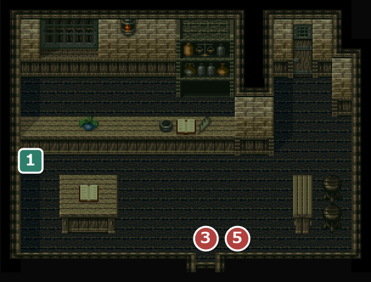
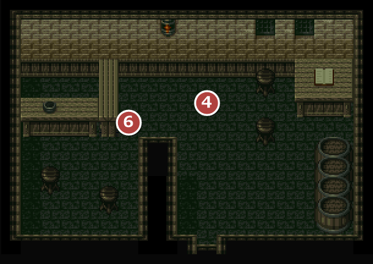
200335奥の部屋への案内 1反乱軍分子(ギルドの鍵)
20064ロウ 6ライオネル
2011エスタンシアの雑貨屋
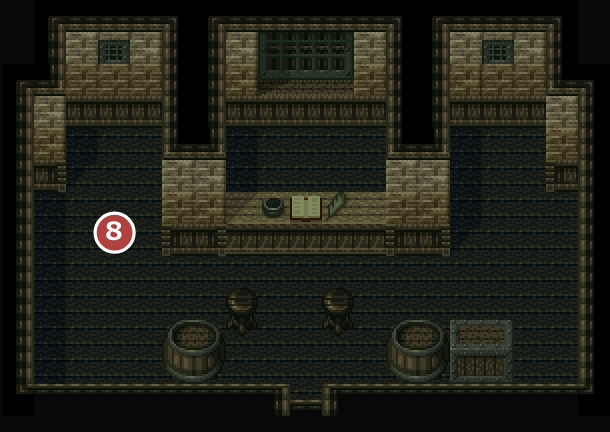
8レンチ・ロックピックを受け取る
| 商品名 | 値段 | |
|---|---|---|
| 黄色の小ビン | 10 | |
| 緑色の小ビン | 20 | |
| のどぐすり | 15 | |
| 聖水 | 20 | |
2004エスタンシアのギルド
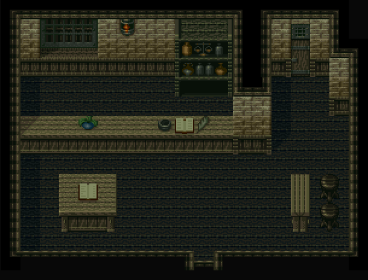
2009エスタンシアの寺院
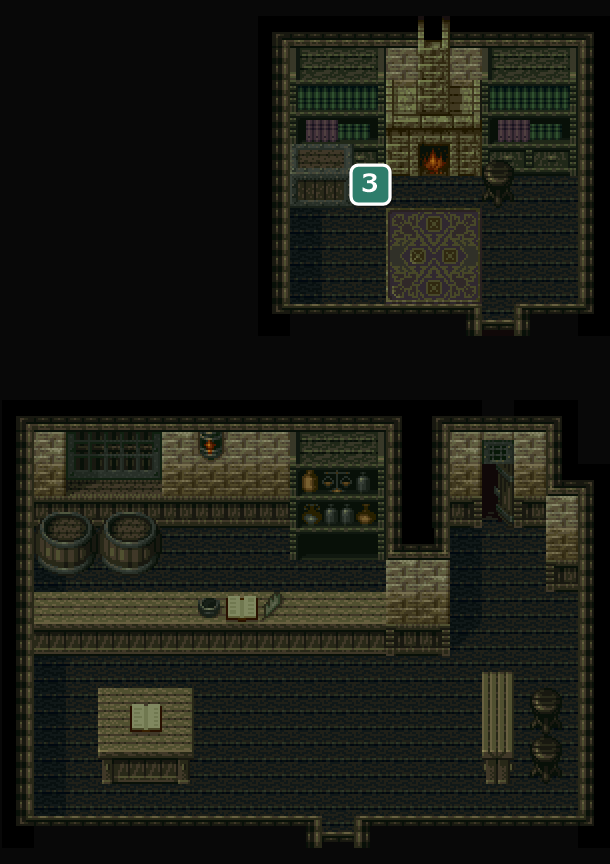
僧侶に 15GOLD 払うと、パーティー全員の呪いを解いてくれる。 3治しの歌の楽譜
20052018エスタンシアの宿屋・エスタンシアの宿屋の２階
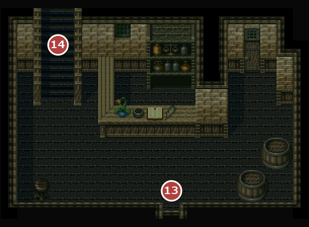
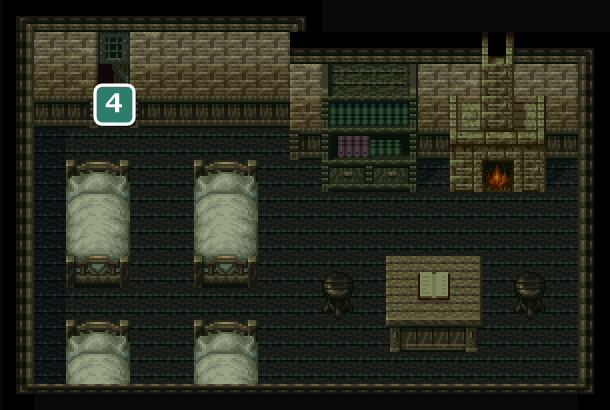
2005宿泊は1人 5GOLD。 13ボビンの宿屋で休む 14翌朝
20184ヴェラの持ち逃げ
2007エスタンシアの船屋
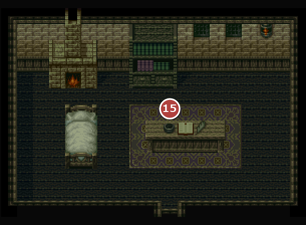
15火山島への船
2001エスタンシアの武器屋

| 商品名 | 値段 | |
|---|---|---|
| ピック | 100 | |
| ロングソード | 150 | |
| 柔らかい弓 | 100 | |
| チェーン | 90 | |
| ダーツ | 90 | |
2010エスタンシアの防具屋
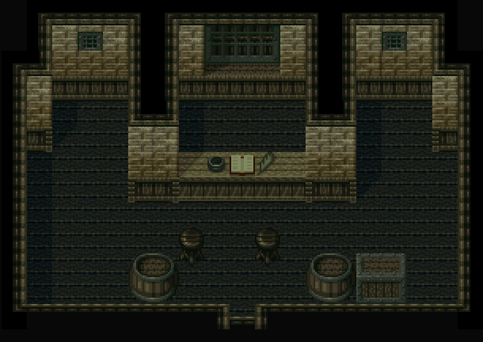
| 商品名 | 値段 | |
|---|---|---|
| 羽根付き帽子 | 10 | |
| ヘルメット | 50 | |
| ブロンズブレスト | 100 | |
| ショートブーツ | 20 | |
2016エスタンシアの高級防具屋

| 商品名 | 値段 | |
|---|---|---|
| シルバーブレスト | 150 | |
| ラウンドシールド | 50 | |
主人公のレベルが 22 以上でないと「もっと腕を磨いてから来な」と言われ、買い物ができない。
2012エスタンシアのポンドの店
5ポンド。強制収容所でポンドと話していないと、店長代理が「店長は不在です」と言うだけ。
2013エスタンシアのスマイスの店
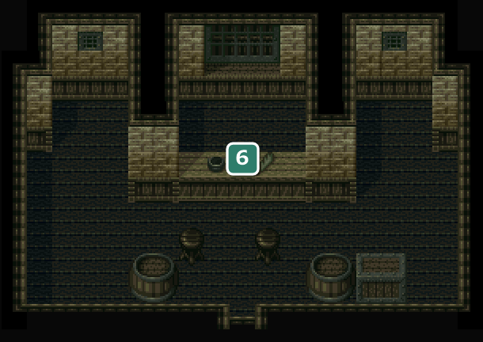
6スマイス。強制収容所でスマイスと話していないと、店長代理が「店長は不在です」と言うだけで、買い物ができない。
| 商品名 | 値段 | |
|---|---|---|
| スーパーのどあめ | 40 | |
| 石化薬 | 30 | |
| 空飛び薬 | 50 | |
| 興奮剤 | 80 | |
| 爆発薬 | 100 | |
2014エスタンシアのペインの家
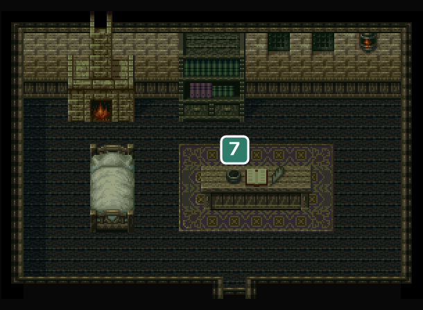
7ペイン。強制収容所でペインと話していないと、誰もいない。
2008エスタンシアの酒場
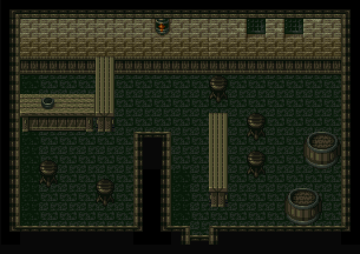
2002エスタンシアの町民の家
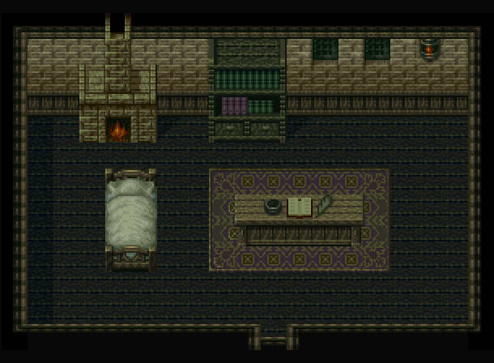
！ショウコを連れているときに女と話すと、ランパル王の御成婚の噂話の後に、ショウコ「…」の一行が増える(話すたびに2つの話を交互にするうちの、御成婚の方)。
2015エスタンシアの町民の家

2017エスタンシアのタリスの家

没イベント情報
- 没船出のときに、抜けた仲間が駆けつけて再び仲間になる場面 … 桟橋の先(⑯)のスクリプトに、ホイヒュー・ドムカ・スリム・ジョーイ・エニクラウド・ヴェラ・トリリア・グラム・ヘンケン・ピックマンが駆けつけて再加入する場面が残っている。どこからも飛んでこないので起きない
- 没ライオネル「俺がいなければ震動石がどれかも分からないだろう…どうだ、考えは決まったか？」 … ドラゴの酒場の奥(⑥)で、説明の後にライオネルが歩み寄って念を押す演出。説明の直後に飛ばされていて出ない